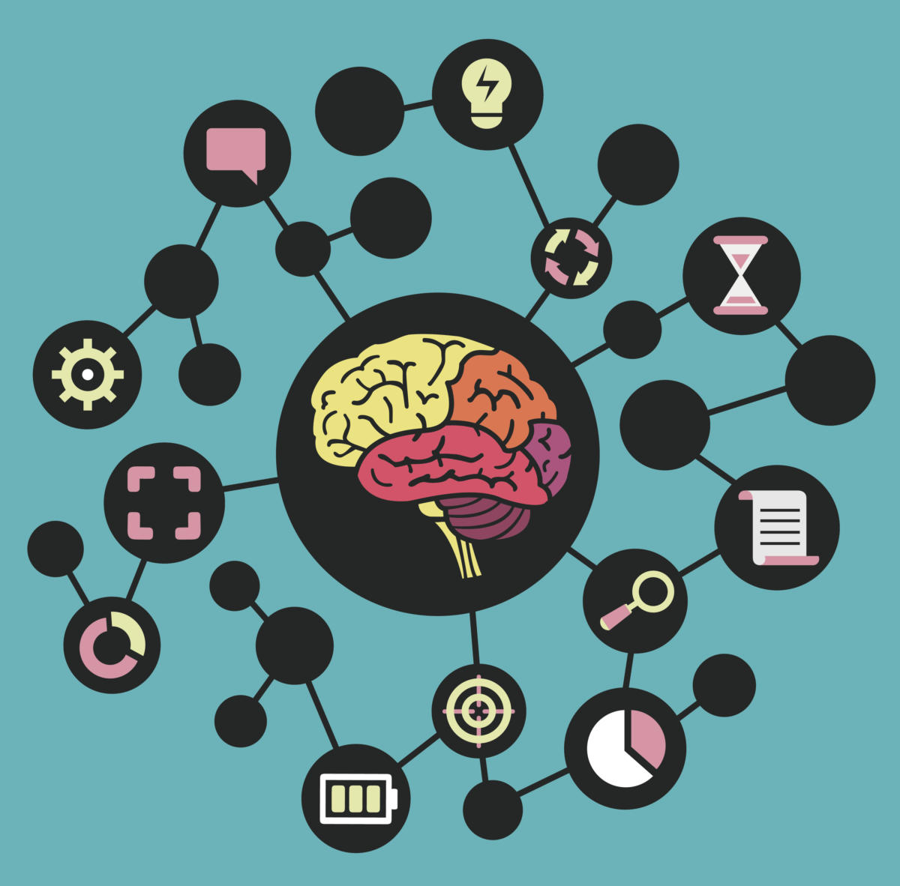

nderlining is one of the simplest and best known study tips. It’s easy to highlight the most significant parts of what you’re reading. Ideally you should do a comprehensive read of a text before you even consider underlining anything. Only on the second reading should you proceed to underline the most notable aspects.The act of underlining something means you are engaging with certain key aspects of the text. There is no need to go crazy and highlight entire blocks of text. You should highlight one key sentence per paragraph and a few important phrases here and there. You can only retain a certain amount so it’s best to retain the most important information.
Taking Notes is one of the most widespread study skills out there. Essentially the aim of note-taking is to summarise lectures or articles in your own words so you can easily remember the ideas. In most cases, the key is to be able to summarise the content as quickly as possible while not leaving out any key info.When creating Notes, you can do it the traditional way with the good ol’ pen and paper or you can utilise online tools, such as GoConqr’s Notes feature.
A good Mind Map can save you many hours of study and further consolidate your knowledge for your exams. Mind Maps are an extremely versatile tools. They can be used for brainstorming, outlining essays or study topics and for general exam preparation.GoConqr offers the ability to create Mind Maps quickly and easily which makes them the ideal tool when it comes to exams.
Using Flashcards is a particularly effective method of learning when trying to
assimilate different facts, dates, formulas or vocabulary.
Subjects such as History, Physics, Maths, Chemistry, Geography or any language are made much easier if you incorporate Flashcards in to your study.Using Flashcards for memorising can become a fun process unlike a lot of other study tools. On top of this, online Flashcards allow you to save a lot of work and time in actually creating your Flashcard decks. What’s more is that they are always readily available online so you have access to them 24/7. Visit online librarySometimes it can be difficult to grasp the implications of some theories. This is where studying
case studies can be a big help. Case studies can help you visualise a theory
and place it in a more familiar and realistic context. This is especially useful in business or law subjects.It’s always of great benefit to examine practical cases studies to accompany your study of pure theory. In this way you can better understand the application of the theory and what it’s thesis actually states.Quizzes are an excellent way to review study notes in the weeks and days before an exam. Quizzes can show where your strengths and weaknesses are, so it allows you to focus your efforts more precisely. Moreover, if you share your Study Quiz with your classmates and test each other as much as possible you can discover even more details and areas you may have overlooked. So before any exam, make sure you create and share a bunch of different Quizzes with your Friends
This is another study technique that is ideal for studying with friends and/or classmates. Brainstorming is a great way to expand every possible idea out of any topic. Just get a bunch of friends together and shoot the breeze, there are no wrong answers when brainstorming – just talk and capture the ideas, you can review afterward.Some ideas that sounded great before will be ruled out straight away afterwards while others that sounded crazy before will be seen to have great promise. Using Mind Maps is an ideal way of capturing all this info as it mirrors the explosive nature of your thought processes.
Mnemonics are especially useful when memorising lists and sets. Mnemonics rules basically work by associating certain concepts with other concepts that are more familiar to us. There are many different ways to make mnemonics and these can be individual to the person.A classic example is ‘Richard of York Gave Battle In Vain’. This Mnemonic rule is for remember the primary colours : Red, Orange, Yellow, Green, Blue, Indigo and Violet.
One of the most effective study skills is also one of the most often overlooked; this is organising your study. Creating a study timetable gives you goals and a time in which to achieve them. Having a study timetable as you study is greatly motivational. GoConqr has a free Study Planner tool which makes organising your study extremely easy.
Many people find it easier to recall images rather than text
, that is why they are better able to memorise concepts if they associate them with pictures or drawings. That is why GoConqr’s tools allow you to add images. GoConqr’s tools are geared towards helping different types of learners as visual learning is often overlooked in classrooms, which are more text or aural based.
Many of these study tips & techniques are not new but are well known to students. However, what is new is the way in which you can now utilise them .Today new technologies have changed how we can interact with these study techniques. So it makes sense to reassess how you use these techniques and see what new tools and techniques you can incorporate into your study